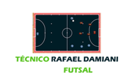

Técnico Rafael Damiani
Futsal
Whatsapp
Padrão Redondo
Análise tática da final do torneio de verão de schroeder
Como fazer a "Carlos Alberto"
Gols cedro ec 4 x 3 Jaguarari
como manter a cobertura durante a marcação no sistema 3x1
Análise tática dos gols do primeiro jogo da LAVM 2021
Análise tática dos gols: Prainha x Fazenda São Paulo
Análise da jogada do @peurafa no campeonato de São Ludgero
Goleiro linha padrão L
3 em linha (dicesar)
Bola parada: escanteio
Saída de pressão
Marcação Y (funil) ou 2-1-1
Defesa quadrante